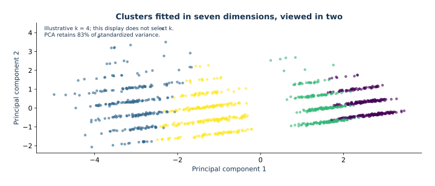
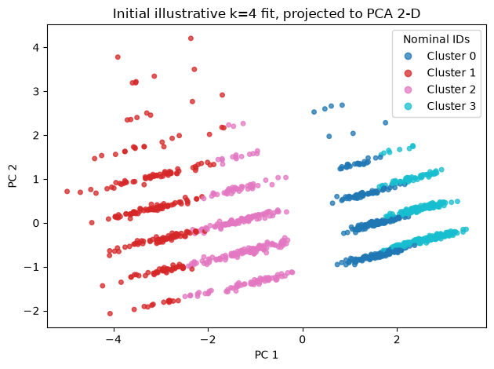
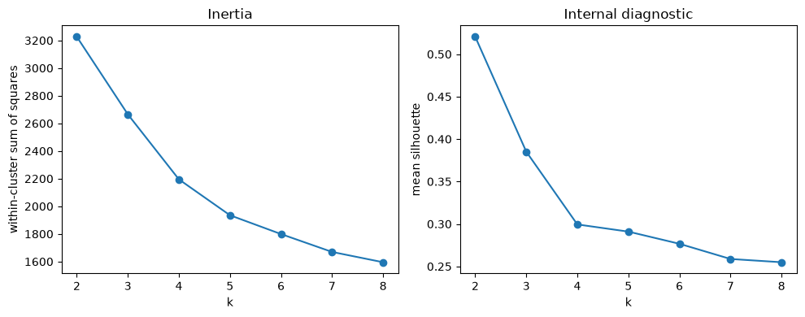
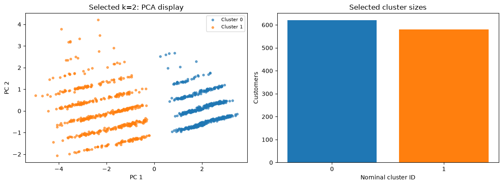
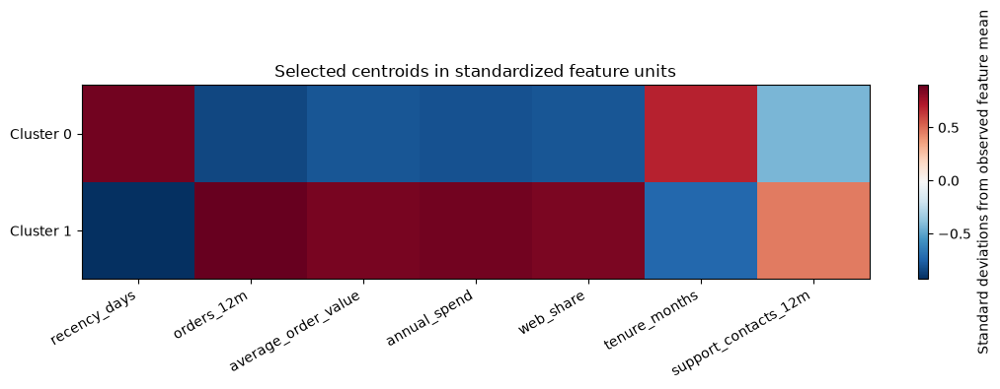
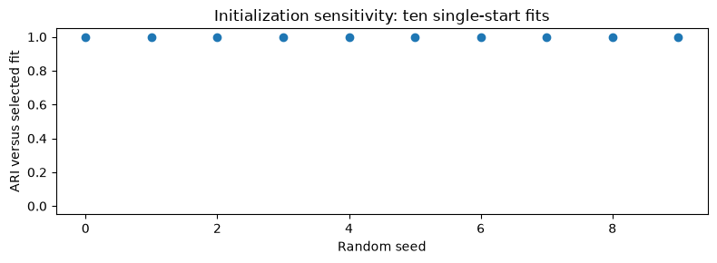

Lecture 06 — Clustering: K-means and PCA geometry
Synthetic customer summaries illustrate distance, local optimization, scaling, and visualization. Truth labels stay out of clustering and selection.

Illustrative k=4 fit to all supplied customer features after standardization, projected to two principal components. This is not the later selected-k result.
What question does this clustering answer?
This is descriptive segmentation of the supplied customer population. We fit scaling and clustering on all observed rows because there is no held-out target to predict in this question. If the goal were reliable assignment of future customers, we would need an evaluation design for that future population and a preprocessing rule fitted before those future observations arrive.
The first four-cluster plot is an initial illustration, not the silhouette-selected final result. The later chosen_k fit is a separate model; do not interpret the initial plot as its output. Cluster IDs are nominal: cluster 0 is not smaller or better than cluster 1.
One Lloyd update: in one dimension, observations 0, 2, and 8 assigned to centers 0 and 7 form groups {0, 2} and {8}. Updating centers to group means gives 1 and 8. Reassign and repeat until the chosen stopping criterion is met. Standardizing inputs changes this geometry; it is a modeling choice, not just a numerical convenience. Two random starts illustrate sensitivity, not a complete stability study.
1. Alternating minimization
K-means minimizes $J=\sum_i\|z_i-\mu_{c_i}\|^2$. With centers fixed, nearest-center assignment minimizes each row's term. With assignments fixed, the gradient is $2|C_j|\mu_j-2\sum_{i\in C_j}z_i$, so the minimum is the arithmetic mean. These steps decrease objective, but the joint problem is nonconvex; initialization can find a local optimum. Multiple starts help without proving global optimality.
from pathlib import Path
import numpy as np
import pandas as pd
import matplotlib.pyplot as plt
from sklearn.preprocessing import StandardScaler
from sklearn.decomposition import PCA
from sklearn.cluster import KMeans
from sklearn.metrics import silhouette_score, adjusted_rand_score
def repo_root(start=Path.cwd()):
for path in (start, *start.parents):
if (path / "data" / "customer_segments.csv").exists():
return path
raise FileNotFoundError("Could not find data/customer_segments.csv")
ROOT = repo_root()
customers = pd.read_csv(ROOT / "data" / "customer_segments.csv")
features = [
"recency_days",
"orders_12m",
"average_order_value",
"annual_spend",
"web_share",
"tenure_months",
"support_contacts_12m",
]
X = customers[features]
truth = customers["segment_truth"] # Keep out of every fit and selection step.
display(X.describe().round(2))
scaler = StandardScaler()
Z = scaler.fit_transform(X)
print("means:", np.round(Z.mean(axis=0), 3), "stds:", np.round(Z.std(axis=0), 3))
1. Alternating minimization · computed output
recency_days orders_12m average_order_value annual_spend web_share \
count 1200.00 1200.00 1200.00 1200.00 1200.00
mean 61.45 7.22 297.64 787.99 0.48
std 39.65 6.53 188.86 508.35 0.26
min 1.00 0.00 47.62 140.35 0.01
25% 23.00 2.00 136.00 341.10 0.25
50% 60.00 4.00 248.44 620.08 0.49
75% 97.00 12.00 428.26 1169.94 0.72
max 144.00 29.00 1029.06 2883.71 0.99
tenure_months support_contacts_12m
count 1200.00 1200.00
mean 27.74 1.49
std 15.54 1.40
min 1.00 0.00
25% 15.00 0.00
50% 27.00 1.00
75% 39.00 2.00
max 70.00 8.001. Alternating minimization · computed output
means: [ 0. 0. 0. -0. -0. 0. -0.] stds: [1. 1. 1. 1. 1. 1. 1.]
Scaling changes which differences count
Compare two observed pairs below. In raw units, a large currency-valued difference can dominate the sum of squared differences. Standardization divides by observed feature scales. Neither distance is intrinsically correct: each expresses a choice about comparable customer differences.
distance_rows = []
for i, j in [(0, 1), (0, 10)]:
distance_rows.append({"pair": f"{i}, {j}",
"raw_distance": np.linalg.norm(X.iloc[i] - X.iloc[j]),
"standardized_distance": np.linalg.norm(Z[i] - Z[j])})
display(pd.DataFrame(distance_rows))
1. Alternating minimization · computed output
pair raw_distance standardized_distance 0 0, 1 1369.355328 6.679387 1 0, 10 725.012828 4.085513
2. Scaling defines distance
Large-scale raw features dominate Euclidean distance. Standardizing $z_{ij}=(x_{ij}-\bar x_j)/s_j$ makes one standard deviation the unit for every feature. This is a modeling choice about feature weights; skew and outliers remain.
2b. K-means options control geometry and search
StandardScaler.fit_transform(X) learns the training columns' means and standard deviations, then returns $Z$. In this descriptive analysis all supplied rows are the population being summarized, so the scaler and clusters are fit on all of them. In a future-customer prediction task, fit the scaler on historical training rows and call transform on later rows.
KMeans.fit(Z) searches for centers and labels. fit_predict(Z) performs that fit and returns the labels for the same rows. predict(Z_new) assigns new rows to the nearest fitted center in the same standardized coordinates; it does not refit or move the centers.
| Option | Library default | This lesson selects | Effect on the computation | Tradeoff |
|---|---|---|---|---|
n_clusters |
8 |
4 for the initial illustration; candidate values 2 through 8 for selection |
Sets $k$, the number of centers and groups | Changes resolution and inertia; there is no universal correct $k$ |
init |
'k-means++' |
'k-means++'; 'random' in sensitivity probes |
Chooses starting centers before Lloyd updates | K-means++ usually seeds useful separated centers; random seeding is a useful sensitivity comparison |
n_init |
'auto' |
30 for the illustration, 20 per candidate $k$, and 1 for explicit single-start probes |
Repeats the run with different seeds and keeps the run with lowest inertia | More starts cost more fits and reduce dependence on one seed; an explicit integer makes the run count clear |
max_iter |
300 |
300 |
Maximum Lloyd updates in each start | A cap prevents endless work; a run can stop at the cap before satisfying tolerance |
tol |
1e-4 |
library default (not passed) | Scikit-learn scales the threshold as tol * mean(feature variances) and stops when the summed squared center shifts are at most that threshold |
Larger tolerance can stop earlier; the threshold changes with the scale of the input matrix |
algorithm |
'lloyd' |
'lloyd' |
Selects the Lloyd implementation | Explicit here so the method named in the derivation matches the estimator call |
random_state |
None |
606 |
Controls seeded initialization | Repeats the same pseudorandom choices in this environment; it does not make the optimum global |
n_init='auto' makes the run count depend on initialization, so the table's explicit integer choices state exactly how much restart search each displayed fit receives. Lower inertia among starts is a search result, not proof of the global minimum.
For the standardized matrix $Z$ with $p$ columns, scikit-learn computes the absolute threshold $\tau=\texttt{tol}\,p^{-1}\sum_{j=1}^p\operatorname{Var}(Z_{:j})$ and checks whether $\|\\boldsymbol{\\mu}^{(t)}-\\boldsymbol{\\mu}^{(t-1)}\|_F^2\le\tau$. The feature variance factor makes the default tolerance comparable across data scales; standardizing the inputs changes those variances and the geometry being clustered. See the official KMeans API reference.
model = KMeans(
n_clusters=4,
init="k-means++",
n_init=30,
max_iter=300,
random_state=606,
algorithm="lloyd",
)
labels = model.fit_predict(Z)
print("inertia:", model.inertia_)
print("sizes:", np.bincount(labels))
centers = scaler.inverse_transform(model.cluster_centers_)
display(pd.DataFrame(centers, columns=features).round(2))
2b. K-means options control geometry and search · computed output
inertia: 2194.7051247400486 sizes: [314 277 303 306]
2b. K-means options control geometry and search · computed output
recency_days orders_12m average_order_value annual_spend web_share \ 0 78.09 2.12 188.37 473.98 0.20 1 19.68 15.73 536.44 1471.53 0.78 2 29.29 10.69 386.66 1003.75 0.63 3 114.05 1.32 105.47 277.82 0.36 tenure_months support_contacts_12m 0 29.16 1.00 1 10.48 2.83 2 21.71 1.50 3 47.86 0.76
See what restarts change while holding the problem fixed
Both fits below use the same standardized observations, $k=4$, k-means++ initialization, and random seed. The only change is the number of starts. The multi-start fit returns its lowest-inertia start. This comparison isolates restart search; it does not use the synthetic labels or select settings from a test set.
restart_single = KMeans(
n_clusters=4, init="k-means++", n_init=1,
max_iter=300, random_state=606, algorithm="lloyd",
).fit(Z)
restart_many = KMeans(
n_clusters=4, init="k-means++", n_init=30,
max_iter=300, random_state=606, algorithm="lloyd",
).fit(Z)
display(pd.DataFrame([
{"starts": 1, "inertia": restart_single.inertia_,
"iterations in selected run": restart_single.n_iter_,
"ARI vs 30-start fit": adjusted_rand_score(restart_many.labels_, restart_single.labels_)},
{"starts": 30, "inertia": restart_many.inertia_,
"iterations in selected run": restart_many.n_iter_,
"ARI vs 30-start fit": 1.0},
]).set_index("starts").round(4))
2b. K-means options control geometry and search · computed output
inertia iterations in selected run ARI vs 30-start fit starts 1 2194.7872 9 0.9913 30 2194.7051 15 1.0000
3. PCA from the Rayleigh quotient
The first PCA direction maximizes $v^TZ^TZv$ subject to $v^Tv=1$. A Lagrange multiplier gives $Z^TZv=\lambda v$, the leading eigenvector or right singular vector. The next code projects only for display. K-means fits all seven standardized original features; two dimensions can hide structure.
For centered $Z=U\Sigma V^T$, the columns of $V$ are principal directions. Scores in $r$ dimensions are $ZV_r=U_r\Sigma_r$, and the sample variance of component $j$ is $s_j^2/(n-1)$. Its explained-variance fraction is $s_j^2/\sum_l s_l^2$. The reconstruction $ZV_rV_r^T$ minimizes squared Frobenius reconstruction error among rank-$r$ matrices, with error $\sum_{j>r}s_j^2$. A component's sign is arbitrary; tied singular values allow rotations within the tied subspace. Neither sign flips nor rotations inside that subspace change the represented geometry.
Read the PCA call and output in their coordinate system
The lesson explicitly asks for two components and svd_solver="full". PCA centers its input columns before computing principal directions; it does not scale them. Here the input is already standardized, so PCA summarizes covariance in those standardized coordinates. fit_transform(Z) learns the column means and directions, then returns the two score coordinates for each row. A fitted PCA's transform(Z_new) centers new rows by the learned means and projects with the learned directions.
explained_variance_ratio_[j] is the sample variance captured by component $j$ divided by total sample variance, using the centered input. Scores are coordinates, not cluster IDs. A component can change sign without changing the represented geometry, and the plot is only a projection: distances or separation in omitted dimensions are hidden. The first two components are selected for a readable picture, not because the plot is a clustering objective.
| PCA option | Default | This lesson | Effect |
|---|---|---|---|
n_components |
None (keep all available components) |
2 |
Keeps two directions for the display; the fitted K-means still uses all seven features |
svd_solver |
'auto' |
'full' |
Uses a full deterministic SVD for this small dense matrix |
whiten |
False |
Default False |
If enabled, rescales component scores to unit component-wise variance; it changes distances in PCA coordinates |
Standardizing the seven raw feature columns before PCA makes each original feature have comparable scale before directions are estimated. PCA whitening happens after the directions are found and rescales component coordinates by their component variances. They are separate transformations with different geometric effects; this notebook standardizes raw features and leaves whitening off.
See the official PCA API reference for solver and whitening conventions.
pca = PCA(n_components=2, svd_solver="full")
Z_2d = pca.fit_transform(Z)
print("explained variance fractions:", pca.explained_variance_ratio_.round(3))
points = plt.scatter(Z_2d[:, 0], Z_2d[:, 1], c=labels, cmap="tab10", s=16, alpha=0.75)
plt.xlabel("PC 1")
plt.ylabel("PC 2")
plt.title("Initial illustrative k=4 fit, projected to PCA 2-D")
handles, _ = points.legend_elements()
plt.legend(handles, [f"Cluster {i}" for i in range(4)], title="Nominal IDs")
plt.tight_layout()
3. PCA from the Rayleigh quotient · computed output
explained variance fractions: [0.72 0.106]

4. Internal diagnostics and label invariance
The globally minimal inertia cannot increase with $k$, because an added center can reproduce the previous solution. A finite randomized run can still wiggle across k when it reaches different local optima, so inspect the observed curve. An elbow remains heuristic. Silhouette compares within distance $a(i)$ to nearest other-cluster distance $b(i)$: $(b-a)/\max(a,b)$. It favors compact separated groups in this metric and can mislead for nonconvex or uneven-density patterns. Cluster IDs are arbitrary; adjusted Rand index (ARI) compares co-membership invariantly under label permutation. Use truth only after choices are fixed.
For a non-singleton cluster, $a(i)$ is the mean distance from point $i$ to the other points in its own cluster. For each other cluster, compute the mean distance from $i$ to its members; $b(i)$ is the smallest of those means. The silhouette is $(b(i)-a(i))/\max\{a(i),b(i)\}$ when the denominator is positive. Implementations assign silhouette zero to singleton clusters. This is a diagnostic of the chosen distance geometry, not external evidence that the partition is economically meaningful.
rows, fitted = [], {}
for k in range(2, 9):
estimator = KMeans(
n_clusters=k,
init="k-means++",
n_init=20,
max_iter=300,
random_state=606,
algorithm="lloyd",
)
labels = estimator.fit_predict(Z)
fitted[k] = estimator
rows.append(
{
"k": k,
"inertia": estimator.inertia_,
"silhouette": silhouette_score(Z, labels),
}
)
diagnostics = pd.DataFrame(rows).set_index("k")
display(diagnostics.round(3))
fig, axes = plt.subplots(1, 2, figsize=(10, 4))
diagnostics["inertia"].plot(marker="o", ax=axes[0])
axes[0].set(xlabel="k", ylabel="within-cluster sum of squares", title="Inertia")
diagnostics["silhouette"].plot(marker="o", ax=axes[1])
axes[1].set(xlabel="k", ylabel="mean silhouette", title="Internal diagnostic")
plt.tight_layout()
4. Internal diagnostics and label invariance · computed output
inertia silhouette k 2 3226.651 0.520 3 2665.105 0.385 4 2194.705 0.299 5 1935.199 0.291 6 1799.064 0.277 7 1669.654 0.259 8 1595.095 0.255

chosen_k = int(diagnostics["silhouette"].idxmax())
chosen = fitted[chosen_k]
print("post-hoc synthetic ARI:", adjusted_rand_score(truth, chosen.labels_))
repeat = KMeans(
n_clusters=chosen_k,
n_init=1,
init="random",
random_state=17,
max_iter=300,
algorithm="lloyd",
).fit(Z)
print("ARI across starts:", adjusted_rand_score(chosen.labels_, repeat.labels_))
print("inertias:", chosen.inertia_, repeat.inertia_)
4. Internal diagnostics and label invariance · computed output
post-hoc synthetic ARI: 0.4996525558167226 ARI across starts: 1.0 inertias: 3226.650570919961 3226.650570919961
5. Interpret the selected solution, not the initial illustration
chosen_k maximizes silhouette among the candidate fits on the standardized seven-dimensional observations. Now show that exact model's sizes, profiles, and colors. The two-dimensional projection can overlap groups separated in other dimensions. Cluster IDs have no ordering and can permute between fits. The synthetic truth is used only for a post-hoc comparison, never for fitting or selecting k.
print("Silhouette-selected k:", chosen_k)
selected_sizes = pd.Series(np.bincount(chosen.labels_, minlength=chosen_k), name="customers")
selected_profiles = pd.DataFrame(
scaler.inverse_transform(chosen.cluster_centers_), columns=features
)
selected_profiles.index.name = "cluster"
display(selected_sizes.rename_axis("cluster").to_frame())
display(selected_profiles.round(2))
fig, axes = plt.subplots(1, 2, figsize=(12, 4.5))
colors = plt.get_cmap("tab10")
for cluster in range(chosen_k):
mask = chosen.labels_ == cluster
axes[0].scatter(Z_2d[mask, 0], Z_2d[mask, 1], s=12, alpha=.65,
color=colors(cluster), label=f"Cluster {cluster}")
axes[0].set(xlabel="PC 1", ylabel="PC 2", title=f"Selected k={chosen_k}: PCA display")
axes[0].legend(fontsize=8)
axes[1].bar(selected_sizes.index, selected_sizes, color=[colors(i) for i in selected_sizes.index])
axes[1].set(xlabel="Nominal cluster ID", ylabel="Customers", title="Selected cluster sizes")
axes[1].set_xticks(selected_sizes.index)
plt.tight_layout()
plt.show()
fig, ax = plt.subplots(figsize=(11, 3.5))
profile_image = ax.imshow(chosen.cluster_centers_, aspect="auto", cmap="RdBu_r")
ax.set_xticks(range(len(features)), features, rotation=30, ha="right")
ax.set_yticks(range(chosen_k), [f"Cluster {i}" for i in range(chosen_k)])
ax.set_title("Selected centroids in standardized feature units")
fig.colorbar(profile_image, ax=ax, label="Standard deviations from observed feature mean")
plt.tight_layout()
plt.show()
5. Interpret the selected solution, not the initial illustration · computed output
Silhouette-selected k: 2
5. Interpret the selected solution, not the initial illustration · computed output
customers cluster 0 620 1 580
5. Interpret the selected solution, not the initial illustration · computed output
recency_days orders_12m average_order_value annual_spend \
cluster
0 95.83 1.73 147.45 377.16
1 24.70 13.09 458.20 1227.16
web_share tenure_months support_contacts_12m
cluster
0 0.28 38.39 0.88
1 0.70 16.35 2.13

Sensitivity across several random starts
Hold k, the dataset, and preprocessing fixed. Ten single-start fits measure initialization sensitivity on these observations. This does not measure stability under new customers or resampling, and agreement with the selected multi-start fit is not a ground-truth accuracy score.
All ten runs below use the same fixed rows and feature scaling, so their ARI values measure sensitivity to initialization on this dataset. They do not measure sample stability: for that question, refit the preprocessing and clustering on resampled or perturbed datasets, then compare co-membership on shared observations.
stability_rows = []
for seed in range(10):
trial = KMeans(n_clusters=chosen_k, n_init=1, init="random", random_state=seed).fit(Z)
stability_rows.append({"seed": seed, "inertia": trial.inertia_,
"ARI_vs_selected": adjusted_rand_score(chosen.labels_, trial.labels_)})
stability_table = pd.DataFrame(stability_rows)
display(stability_table.round(4))
fig, ax = plt.subplots(figsize=(8, 3))
ax.scatter(stability_table.seed, stability_table.ARI_vs_selected)
ax.set(xlabel="Random seed", ylabel="ARI versus selected fit", ylim=(-.05, 1.05),
title="Initialization sensitivity: ten single-start fits")
plt.tight_layout()
plt.show()
5. Interpret the selected solution, not the initial illustration · computed output
seed inertia ARI_vs_selected 0 0 3226.6506 1.0 1 1 3226.6506 1.0 2 2 3226.6506 1.0 3 3 3226.6506 1.0 4 4 3226.6506 1.0 5 5 3226.6506 1.0 6 6 3226.6506 1.0 7 7 3226.6506 1.0 8 8 3226.6506 1.0 9 9 3226.6506 1.0

Limits
K-means favors roughly spherical groups under Euclidean distance and can be sensitive to outliers, scaling, and initialization. A partition is not proof of natural or actionable customer types.